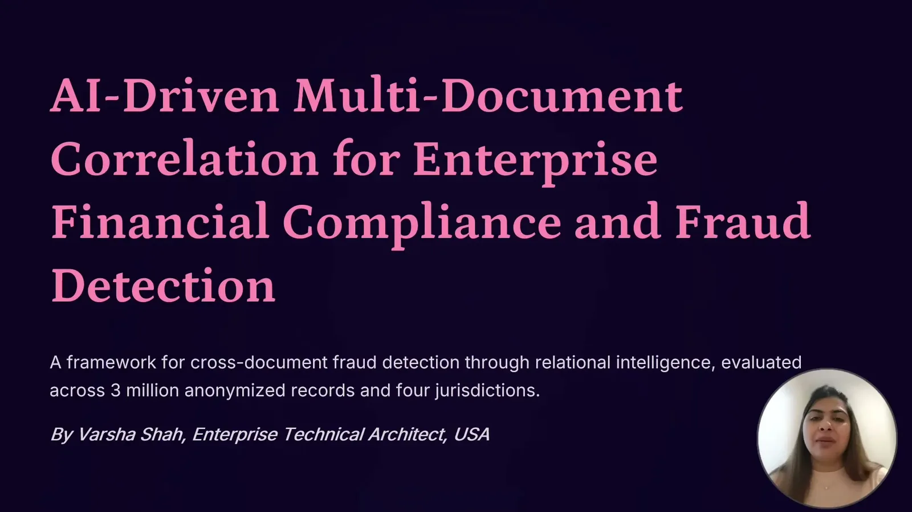
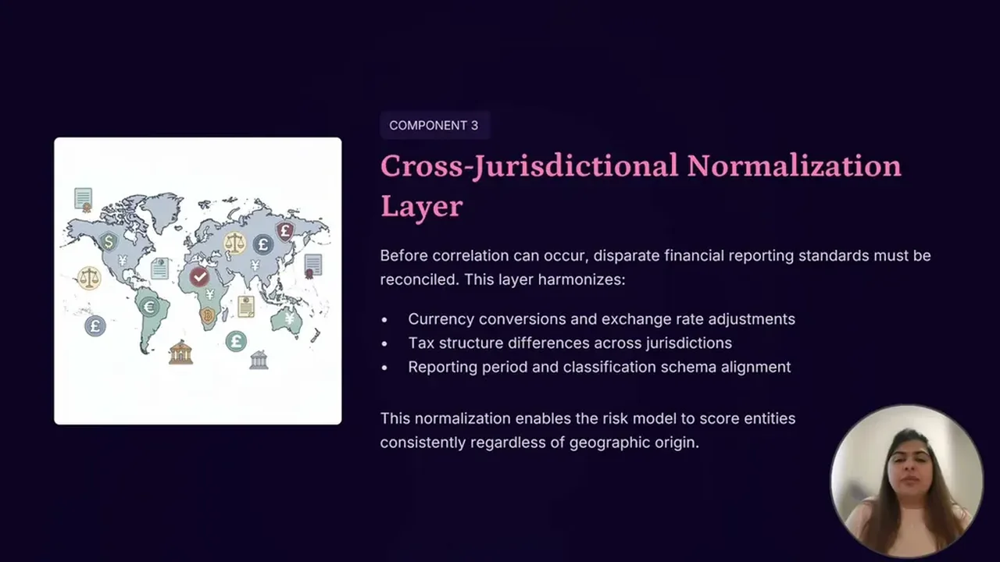
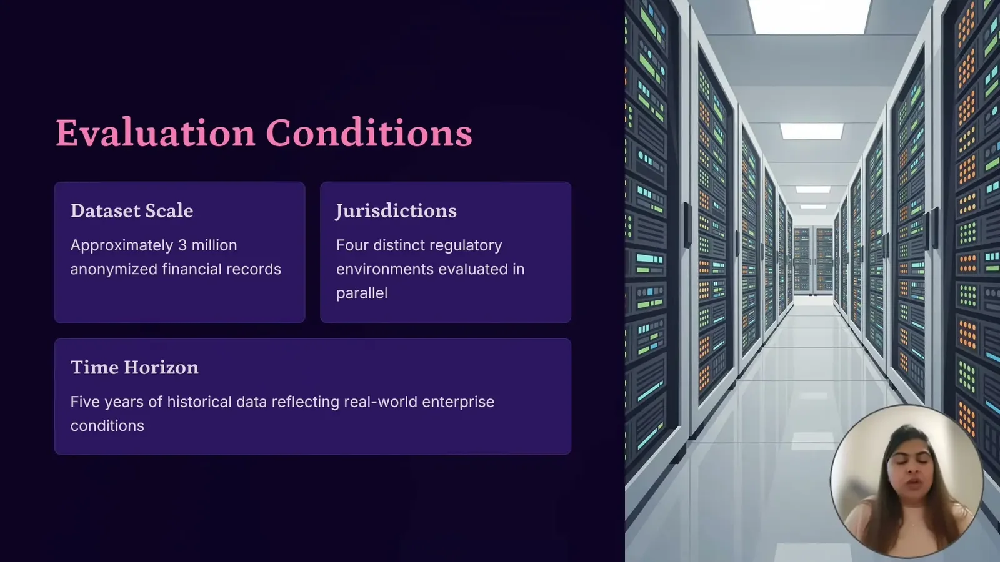
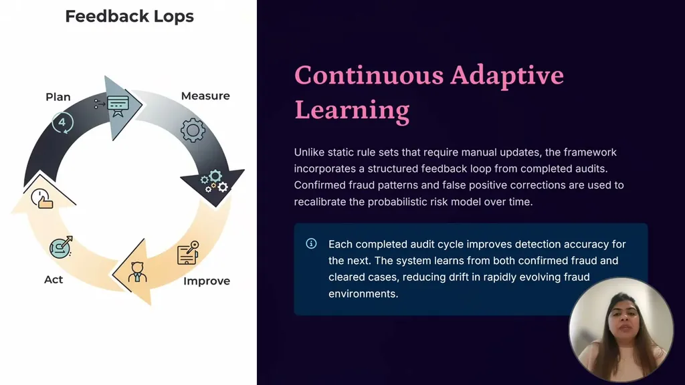

AI-Driven Multi-Document Correlation for Financial Compliance
If you only read one thing
- A framework combining entity-correlation graphs, probabilistic risk scoring, and cross-jurisdictional normalization is built to catch fraud patterns that only appear when documents are connected, not within any single document.
- Tested on approximately 3 million financial records across 4 jurisdictions over 5 years, it reported 91% precision and 87% recall (F1 0.89).
- It reduced false positives by 76% and manual audit effort by approximately 40% versus traditional rule-based, document-level review.
Traditional compliance systems validate each document independently -- a payroll register against payroll rules, an invoice against procurement policy, a tax filing against tax regulation -- and consider a transaction compliant if each document passes on its own. The talk argues sophisticated fraud rarely shows up as an error in a single document; it emerges only when records are cross-referenced, which rule-based and document-level NLP systems aren't built to do.
“Traditional rule-based and document-level NLP system are designed to validate individual records, but they are not built to understand relationship across the documents”
▶ watch at 03:07
The proposed architecture combines three components: a graph-based entity correlation engine that links employees, vendors, accounts, and transactions across payroll/tax/procurement/financial systems; an adaptive probabilistic risk model that scores connected data using multiple risk signals rather than static rules; and a cross-jurisdictional normalization layer that standardizes currency, tax structure, and reporting standards so risk is evaluated consistently regardless of where a transaction originated.
“combines the graph-based entity correlation, probabilistic risk modeling, and cross-jurisdictional normalization to uncover these hidden relationships”
▶ watch at 01:03
The framework was evaluated on roughly 3 million financial records collected over 5 years across 4 regulatory jurisdictions. It reported approximately 91% precision, approximately 87% recall, and an F1 score of 0.89, which the talk frames as evidence of a strong balance between the two.
“The framework was evaluated using the approximately 3 million of the financial records collected over 5 years of period over the four different regulatory jurisdictions”
▶ watch at 09:56“The framework achieved approximately 91% of precision, meaning the vast majority of the flat cases were confirmed as a genuine anomalies here”
▶ watch at 10:26“it also achieved 87% um recalls, demonstrating its ability to identify most true fraud cases while minimal uh minimizing the misdetections here. So, together, these results produce a F1 score that is 0.89”
▶ watch at 10:26
Beyond detection accuracy, the framework is reported to cut false positives by 76%, meaning investigators spend less time reviewing cases that turn out to be legitimate, and to reduce manual audit effort by approximately 40%, letting compliance teams focus on high-risk cases instead of routine document reviews.
“One of the most significant outcome was a 76% uh reduction in false positive, meaning um investigators spend uh far less than reviewing the cases”
▶ watch at 11:28“the framework reduces the manual audit efforts by approximately 40% allowing compliance teams to be focused on the only high-risk cases instead of uh routing the document reviews”
▶ watch at 11:28
The talk frames the shift enabled by continuous learning from audit outcomes as moving compliance teams from asking what went wrong after the fact to asking what is likely to go wrong next, i.e. from reactive validation to predictive governance.
“Instead of asking what went wrong, organizations can begin asking what is likely to go wrong next”
▶ watch at 15:06
Commentary (ours)
The reported numbers (91% precision, 87% recall, 76% false-positive reduction) come from a single research evaluation without a stated baseline methodology or independent replication, so they read as a proof-of-concept result rather than a production benchmark -- worth asking about the baseline rule-based comparator and dataset composition before treating the percentages as generalizable (ours).
Underlying detail — every claim, typed and timestamped (8)
| Stance | Claim | t |
|---|---|---|
| asserts | The framework combines graph-based entity correlation, probabilistic risk modeling, and cross-jurisdictional normalization to surface hidden cross-document relationships. | 01:03 |
| asserts | The framework was evaluated on approximately 3 million financial records collected over 5 years across 4 regulatory jurisdictions. | 09:56 |
| asserts | The framework achieved approximately 91% precision, meaning most flagged cases were confirmed genuine anomalies. | 10:26 |
| asserts | The framework achieved approximately 87% recall and a combined F1 score of 0.89. | 10:26 |
| asserts | The framework produced a 76% reduction in false positives, cutting investigator time on ultimately-legitimate cases. | 11:28 |
| asserts | Manual audit effort was reduced by approximately 40%, letting compliance teams focus on high-risk cases. | 11:28 |
| warns | Traditional rule-based and document-level NLP systems validate individual records but can't detect relationships across documents. | 03:07 |
| recommends | Organizations should move from reactive compliance review to predictive governance, asking what is likely to go wrong next. | 15:06 |
Machine-readable copy embedded in this page (script#ontology) and in the corpus ontology.